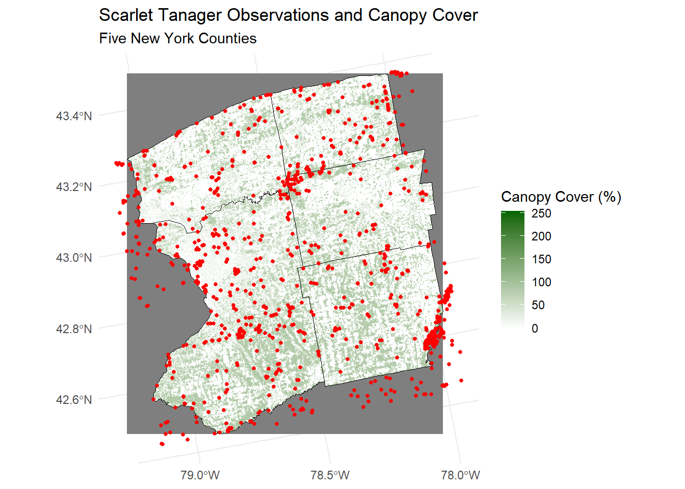

Exploring Canopy-Cover Dependency of Local Bird Species
Author
Jordan Spindel
Introduction
Canopy cover is a significant factor regarding avian species composition and diversity in an area. For example, a species like the Scarlet Tanager (Piranga olivacea) is usually found only in areas with high canopy cover. Likewise, other species do best with minimal/no canopy cover, such as Eastern Meadowlark (Sturnella magna) and Bobolink (Donicholynx oryzivorus). Survival and reproduction depend on what resources are found in these habitats and how each bird is adapted to their individual niche. My study aims to look at the relationships between canopy cover and species composition in several Western New York counties, with the relationships being able to influence conservation and management actions in the area.
Materials and methods
Canopy cover is a significant factor regarding avian species composition and diversity in an area. For example, a species like the Scarlet Tanager (Piranga olivacea) is usually found only in areas with high canopy cover. Likewise, other species do best with minimal/no canopy cover, such as Eastern Meadowlark (Sturnella magna) and Bobolink (Donicholynx oryzivorus). Survival and reproduction depend on what resources are found in these habitats and how each bird is adapted to their individual niche. My study aims to look at the relationships between canopy cover and species composition in several Western New York counties, with the relationships being able to influence conservation and management actions in the area.
For species occurrence data, I plan to use a package called spocc. This package can generate species occurrence data from several sources, including eBird, iNaturalist, and GBIF records. Below is an example map of Scarlet Tanager (Piranga olivacea) sightings over the counties of Erie, Genessee, Niagara, Orleans, and Wyoming. Due to sightings being generated in the entire bounding box, I aimed to use a roughly rectangular patch of the state where only a small portion of records would likely need to be filtered out.
First we install the packages needed and load them into our library. A quick guide to what each package does (not counting those in tidyverse): Tigris: Allows access to some geographical datasets (counties, townships, etc.) CoveR2: Allows R to interpret and display canopy Terra and Tidyterra: Help with Spatial Analysis of Rasters Spocc: Grants access to ecology databases Dismo and pROC: Allows R to run Species Distribution Model (SDM)
library(tidyverse)
── Attaching core tidyverse packages ──────────────────────── tidyverse 2.0.0 ──
✔ dplyr 1.2.1 ✔ readr 2.2.0
✔ forcats 1.0.1 ✔ stringr 1.6.0
✔ ggplot2 4.0.3 ✔ tibble 3.3.1
✔ lubridate 1.9.5 ✔ tidyr 1.3.2
✔ purrr 1.2.2
── Conflicts ────────────────────────────────────────── tidyverse_conflicts() ──
✖ dplyr::filter() masks stats::filter()
✖ dplyr::lag() masks stats::lag()
ℹ Use the conflicted package (<http://conflicted.r-lib.org/>) to force all conflicts to become errors
library(sf)
Linking to GEOS 3.14.1, GDAL 3.12.1, PROJ 9.7.1; sf_use_s2() is TRUE
library(tigris)
To enable caching of data, set `options(tigris_use_cache = TRUE)`
in your R script or .Rprofile.
Loading required package: raster
Loading required package: sp
Attaching package: 'raster'
The following object is masked from 'package:dplyr':
select
library(terra)
terra 1.9.50
Attaching package: 'terra'
The following object is masked from 'package:tigris':
blocks
The following object is masked from 'package:tidyr':
extract
library(tidyterra)
Attaching package: 'tidyterra'
The following object is masked from 'package:raster':
select
The following object is masked from 'package:stats':
filter
library(pROC)
Type 'citation("pROC")' for a citation.
Attaching package: 'pROC'
The following objects are masked from 'package:stats':
cov, smooth, var
Next, we download a canopy raster by going to the MLCD site. I created a window targeting 2025 canopy data which covers the desired counties. This was downloaded as a TIFF file, then uploaded into the project. Although this code does not work due to the TIFF file not being in the repository (it is very big), it is fairly easily to create one that covers the five counties and put it into the project folder.
Next, we create a vector layer of just the five counties by filtering the ny_counties dataset provided by tigris. It must be projected, cropped, and masked so that it and the raster are compatible.
Download the bird data. I requested 3000 Scarlet Tanager “Piranga olivacea” records over a five-year span
tanager_data <-occ(query ="Piranga olivacea", from =c("gbif", "inat"), geometry = county_bbox, limit =3000, date =c("2020-01-01", "2025-12-31"), has_coords =TRUE)
Now to convert the occurence data to a dataframe, check the row count, and remove duplicate locations and missing coordinates. Also make the dataset a spatial object.
tanager_df <-occ2df(tanager_data)nrow(tanager_df)
[1] 3055
tanager_clean <- tanager_df %>%filter(!is.na(longitude),!is.na(latitude) ) %>%distinct(longitude, latitude, .keep_all =TRUE)tanager_sf <-st_as_sf( tanager_clean,coords =c("longitude", "latitude"),crs =4326,remove =FALSE)# Reproject to match your raster/target CRStanager_sf_projected <-st_transform(tanager_sf, crs =st_crs(canopy_ny))
This plot shows all of our observations against the canopy raster.
Warning: Using `by = character()` to perform a cross join was deprecated in dplyr 1.1.0.
ℹ Please use `cross_join()` instead.
ℹ The deprecated feature was likely used in the tidyterra package.
Please report the issue at <https://github.com/dieghernan/tidyterra/issues>.
Scale for fill is already present.
Adding another scale for fill, which will replace the existing scale.

Now to filter the observations to those within our five counties. Just over 2500 fall within it (about 500 outside). Ensure they are in the same CRS first.
The AUC is 0.573, which is not much better than a random selection, but this is just the basic version of the project.
As for next steps, I plan to conduct a similar analysis/model with other native bird species. For efficiency, I plan to use a looping model so I don’t have to write many thousands of lines of code. Additionally, I will probably alter the SDM code so that it does the same thing with less lines.